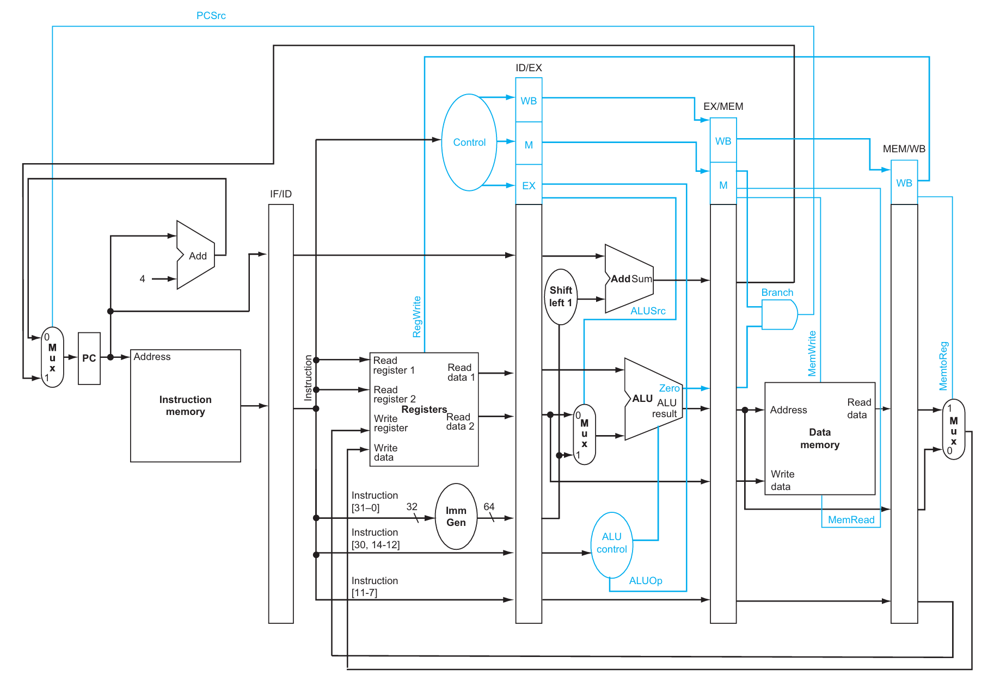
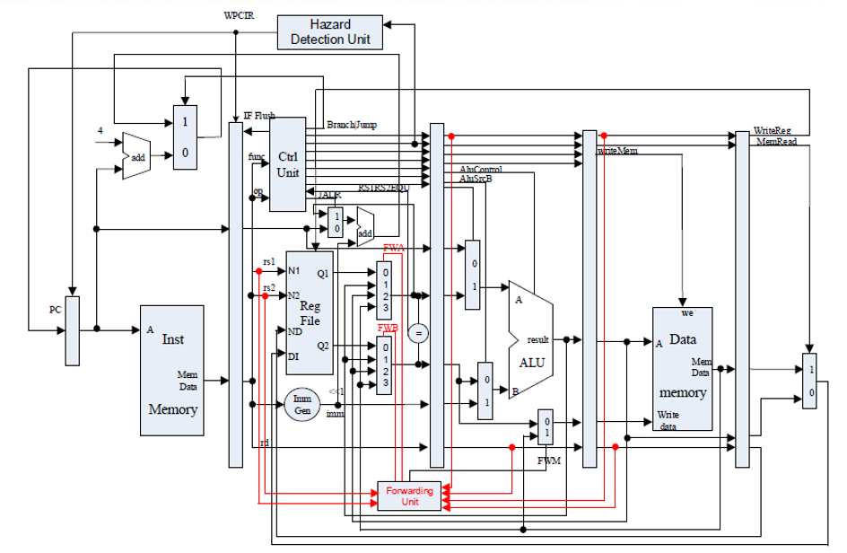
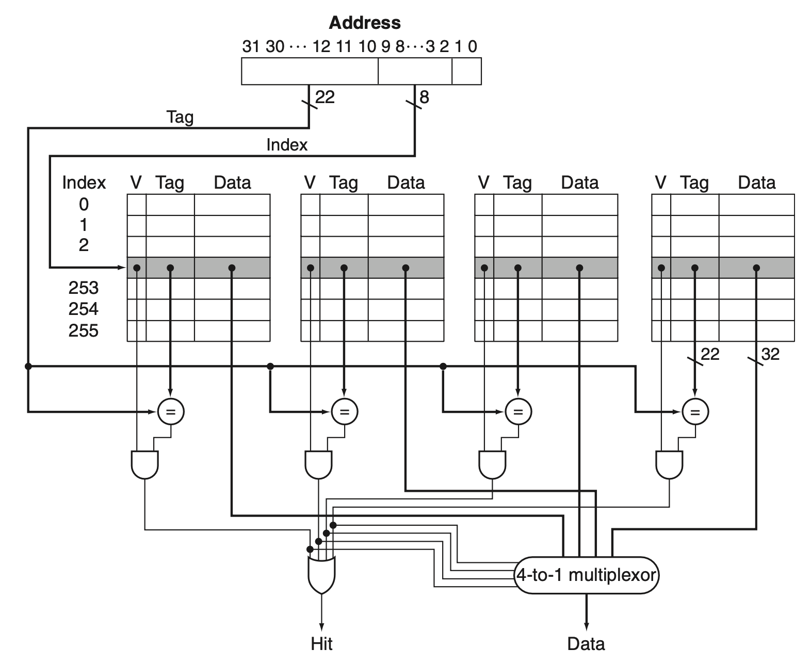
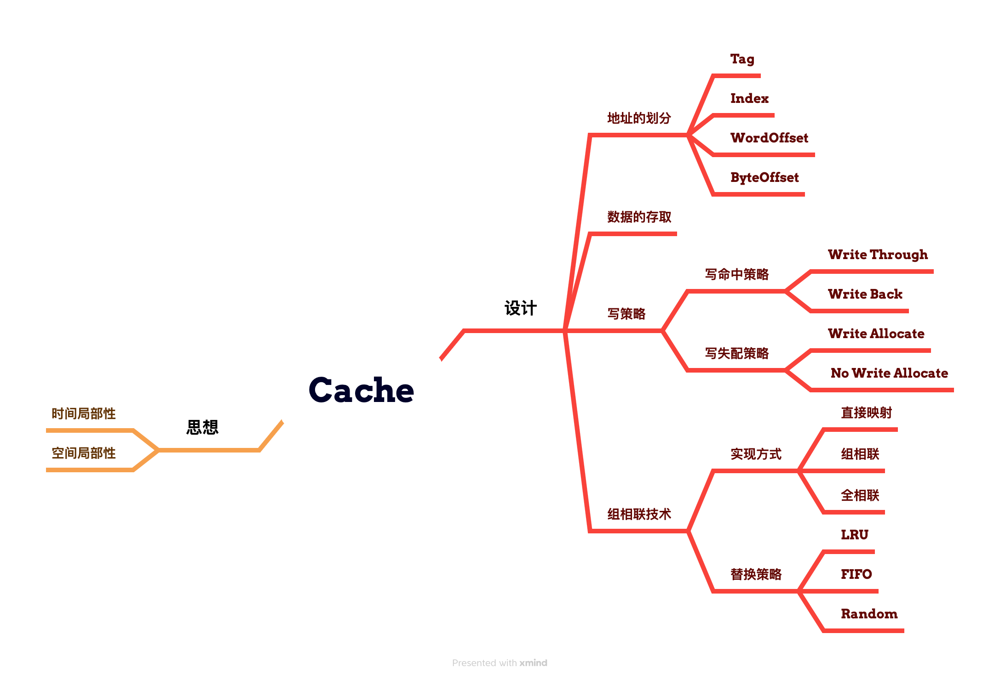
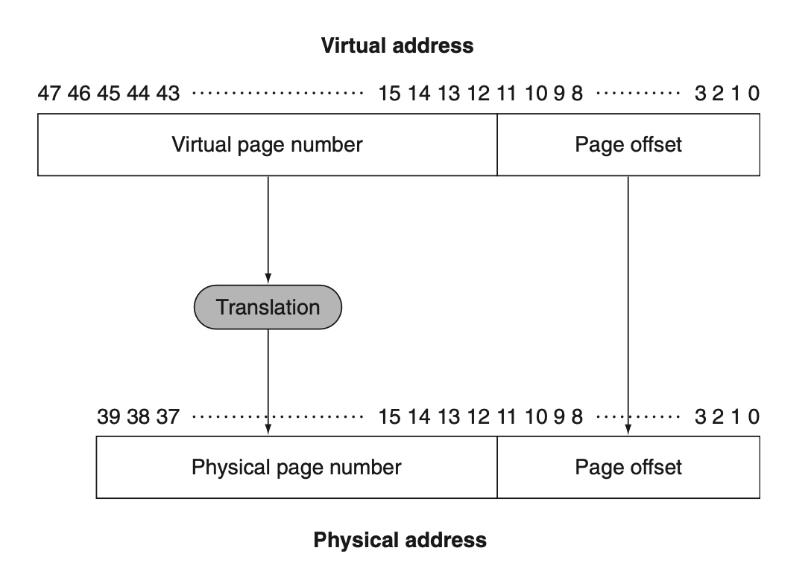
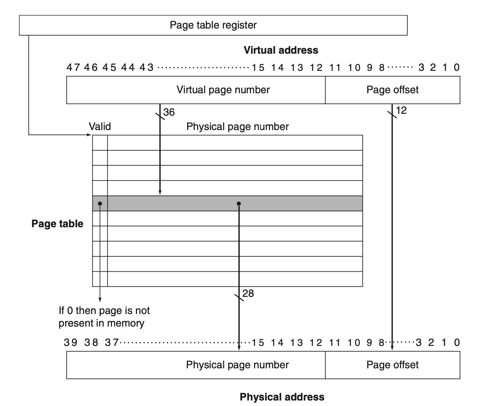
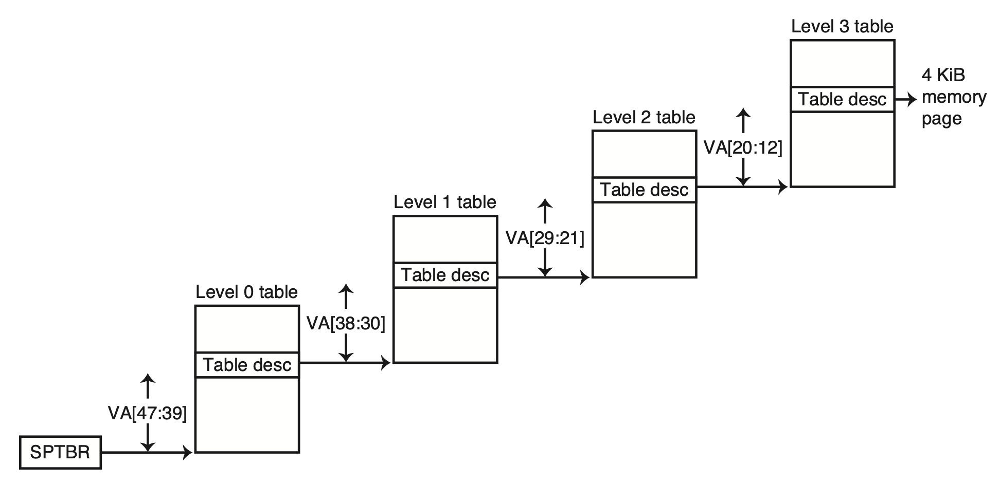
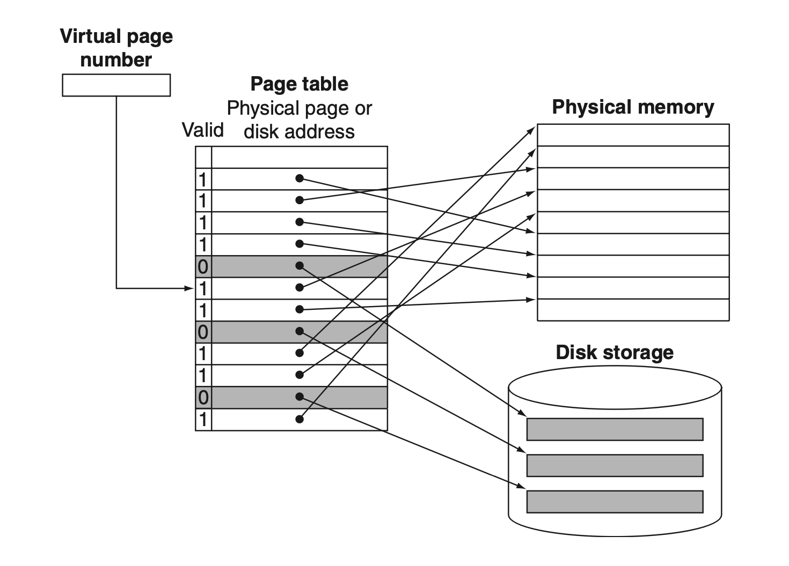
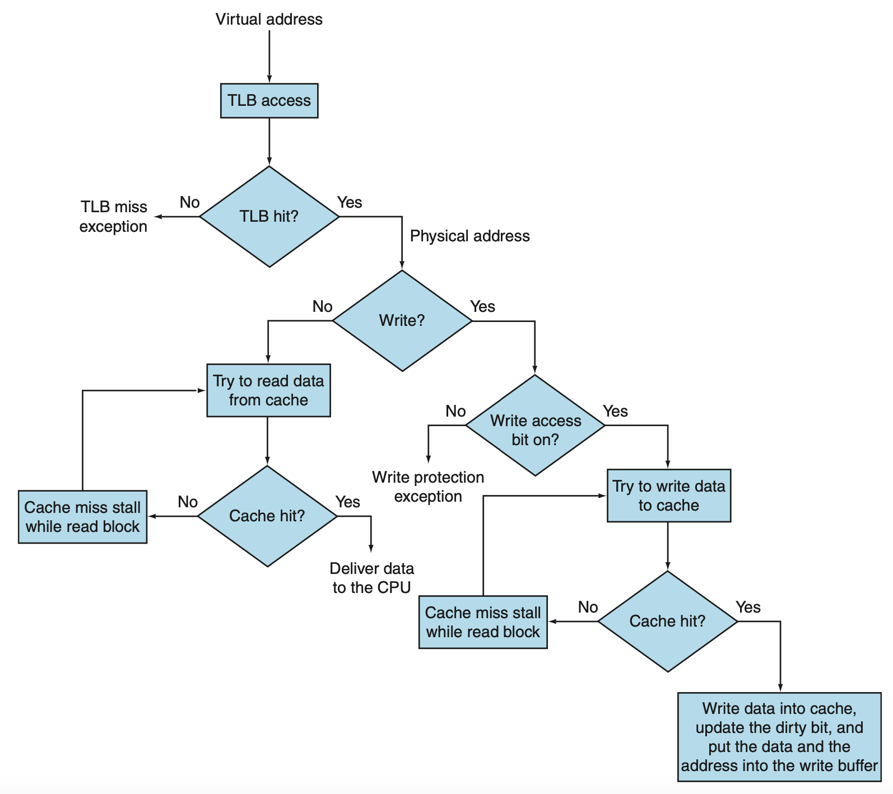

Chapter 0：《计算机组成》复习¶
约 4389 个字 9 张图片 预计阅读时间 15 分钟
目录
- CPU 设计
- 流水线 CPU
- 中断与异常
- 存储层次结构
- Cache 相关知识
- 虚拟内存
- 实验 Tips
1. CPU 设计¶
1.1 流水线 CPU¶
问题一：为什么需要流水线？
答：增大 CPU 的吞吐量，提高 CPU 的效率。
问题二：流水线 CPU 能够运行的硬件前提是什么？
答：我们能够把硬件划分为多个阶段，每个阶段的硬件是独立的（同一时间内不会有结构冲突）。
1.2 RISC-V 简单五级流水线¶
- IF：Instruction Fetch
- ID：Instruction Decode
- EX：Execute
- MEM：Memory Access
- WB：Write Back
为了在下一阶段的指令执行中能够用到上一阶段的结果，需要保存上一阶段的结果，于是引入流水线寄存器。
1.3 流水线寄存器¶
- IF/ID：存储从指令存储器读取的指令等
- ID/EX：存储从寄存器堆读取的寄存器值等
- EX/MEM：存储 ALU 的计算结果等
- MEM/WB：存储从数据存储器读取的数据等
每条指令有一套自己的硬件控制信号。单周期 CPU 中，由于一次只执行一条指令，因此只需要一套控制信号。
而流水线 CPU 中如果控制信号不做存储，则后面指令的控制信号会覆盖前面指令的控制信号，导致错误执行。所以控制信号也要随着流水线向前推进。

1.4 解决冲突¶
- 结构冲突：多个指令需要访问同一硬件资源
- 这里主要考虑寄存器堆的访问，使用下降沿写入，上升沿读取的方式解决
- 数据冲突：后面的指令需要用到前面指令的结果
- 有 EX 冲突，MEM 冲突；MEM 冲突还分为数据是 ALU 计算结果还是访存结果
- 可以通过无脑 stall 解决，但是会严重影响性能
- 也可以通过 forwarding 解决，但是需要额外的硬件支持
- load-use 类型冲突不能直接 forwarding，需要先 stall 一拍
- 控制冲突：分支指令的执行结果会影响后面指令的执行
- 可以直接 stall 直到能够判定出分支结果
- 也可以使用分支预测技术，常用的静态预测方式是预测不跳转（为什么？）
- 静态预测可以提前到 ID 阶段
- 动态预测也有很多种，比如一位、两位预测、锦标赛预测等

1.5 中断与异常¶
这里要区分一下：
- Exceptions：程序运行过程中的异常事件，如除零、内存访问越界等。
- Interrupts：外部事件引起的中断，如 I/O 设备的输入输出。
区分中断和异常
一种角度：异常一般是同步的，而中断一般是异步的。
另一种角度：异常是由程序引起的，而中断一般是由外部设备引起的。
在实验（Lab2）中，异常会以非法指令、ecall 等形式出现，而中断会以外设中断等形式出现。
下文不区分异常和中断，统称为异常。
1.6 遇到了异常怎么做？¶
统共分三步：
- 保留案发现场
- 跳到异常处理程序
- 处理完异常后恢复现场，继续执行
两个问题
- 用户程序没法直接访问异常处理程序，怎么办？
- 答案：通过区分不同的特权级别，异常处理中在不同的特权级别之间切换。
- 如何保留现场？
- 答案：引入 CSR 寄存器来保存 CPU 的状态。
1.7 RISC-V 特权级别¶
阅读官方的、最新的 RISC-V 特权指令集手册是非常重要的。
| Level | Abbreviation | Description |
|---|---|---|
| 0 | U | User Mode |
| 1 | S | Supervisor Mode |
| 2 | Reserved | |
| 3 | M | Machine Mode |
所有硬件实现必须提供 M 模式。
1.8 CSR 寄存器¶
CSR 寄存器是一种特殊的寄存器，用于保存 CPU 的状态。CSR 寄存器的访问方式和普通寄存器不同：
- 只能在某些特权级别下访问。
- 只能用 CSR 指令访问。
RISC-V 提供了 4096 个 CSR 寄存器，用于保存 CPU 的状态。常见的 CSR 寄存器有：
mstatus：保存 CPU 的状态，如中断使能、特权级别等。mcause：保存异常原因。mepc：保存异常发生时的 PC。
具体实现可以在实验中体会。
1.9 处理过程¶
- Save the Context：保存当前的 CPU 状态。这包括 PC、寄存器等。
- 将当前
PC保存到mepc - 发生异常的地址存入
mtval - 将中断/异常原因写入
mcause寄存器 mstatus.MPIE=mstatus.MIE,mstatus.MIE=0关闭中断使能- 进入机器态
- 将当前
- Trap Handler：跳转到异常处理程序。这个程序一般是预先定义好的，其起始地址放在
mtvec寄存器中。- Direct Mode：直接跳转到中断处理程序。
- Vectored Mode：通过中断号跳转到中断处理程序。
- Return：处理完异常后，恢复 CPU 状态，继续执行。
mstatus.MIE=mstatus.MPIE恢复中断使能PC跳转到mepc定义的地址处继续运行- 从机器态返回原来的态
2. 存储层次结构¶
2.1 缓存的思想：局部性¶
你坐在图书馆的桌子前，正在进行一项需要查阅或修改某些书籍的工作。
你发现，每次你需要一本书时，你都要从书架上拿下来，翻开，找到你需要的那一页，然后再放回去。
这样的过程很慢，于是你决定在桌子上放一些书，这样你就不用每次都去书架上找了。
桌子上的容量有限，但是拿取速度快；书架上的容量大，但是拿取速度慢。
选哪些书放在桌子上呢？ 你发现两个有趣的点：
- 你刚看完的书，有比较大概率下次还会用到。（时间局部性）
- 你看的书的同类型书（它们在书架上可能是相邻的），也有比较大概率下次会用到。（空间局部性）
于是你决定把这些书放在桌子上，这样你就可以更快地找到你需要的书了。
以下，我们假定从书架上拿书不是“剪切”，而是“复制”。
2.2 缓存的思想：映射¶
当你想要查看一本书的时候，你会获得一个位置信息，然后通过位置信息找到这本书。
怎样知道这本书在书架上的位置呢？这就需要你在拿取书的时候记下这本书在书架上的位置。
现在假设一共有 100 个书架，每个书架有 8 层，且每层只放一本书。你的桌子恰好也只能放 8 本书。
当你拿取一本书的时候，你会记下这本书在第几个书架（Tag）。
同时，如果这本书在第 i 层 （Index），你就把这本书放在桌子上的第 i 个位置。
如果第 i 个位置有书可以查阅，你就标记这个位置是有效的 （Valid）。
如果桌子的第 i 个位置已经有书，现在你又要从书架上拿一本恰好也在第 i 个位置的书，那么你就需要把这个位置的书替换掉。（块替换）
2.3 缓存的思想：定位¶
如果用 <书架号, 层号> （Address） 来表示这本书，那么当你收到一个 <书架号, 层号> 的请求时，你就可以很快地找到这本书：
- 先按层号，定位到你桌子上的第 i 本书的位置
- 如果这个位置没有有效数据（不是 Valid），说明这个位置没有书，需要从书架上拿 （Miss）
- 如果有，还需要比对书架号
- 如果不一样，说明这本书不在桌子上，需要从书架上拿 （Miss）
- 如果一样，说明这本书在桌子上，直接拿就行了 （Hit）
2.4 缓存的思想：写策略¶
如果你想修改某本书的内容，当桌子上恰好有这本书 （Write Hit） 时，有两种写策略：
- 修改桌子上的书，同时也修改书架上的书 （Write Through）
- 每次修改都要写回书架，这样保证了书架上的书和桌子上的书是一样的
- 但是这样会增加写回的时间
- 只修改桌子上的书，等到替换时再修改书架上的书 （Write Back）
- 这种方法需要我们额外标记书的内容自从上次放在桌子上之后是否被修改过 （Dirty）
- 如果在某一本书被替换的时候恰好是 dirty，需要先写回书架再替换
- 如果不是 dirty，就直接丢掉，就需要写回书架，这样节省了写回的时间
如果桌子上没有这本书 （Write Miss），需要从书架上拿，这时候也有两种写策略：
- 直接在书架里面修改，不放在桌子上 （No Write Allocate）
- 一般和 Write Through 结合使用
- 先拿到这本书放在桌子上，再在桌子上修改 （Write Allocate）
- 一般和 Write Back 结合使用
2.5 缓存的思想：更大的 data 块¶
每一层只放一本书未免太浪费了，于是你决定每一层放四本书。这四本书的位置用两位的偏移量就能够表示。
那么现在想定位一本书，除了书架号和层号，还需要偏移量 （Byte Offset）。于是你把前面提到的 address 修改为：
- <书架号, 层号, 偏移量> ->
| Tag | Index | Byte Offset |
同时，你的桌子也要做相应的修改：每一次拿取和放回都是以层为单位，也就是一次拿取四本书。桌子的每个位置都可以摞起来四本书。
由于查阅还是以一本书为单位，所以在从位置信息获取到四本书后，你会再根据偏移量找到你需要的那本书。
然而由于四本书的顺序在任何时候都是固定的，所以你只需要在查找的最后一步利用偏移量即可，不需要做额外的比对和处理。
同样，需要注意的是，如果桌子上某个位置已经满了，你需要替换的时候，也是以层为单位的。
以下，我们称一层的四本书为一个块，或者叫一捆。（Block） 前面提到的所有有关“一本书”的操作都应该改为“一个块”。
2.6 缓存的思想：组相联¶
现在一切都 work 得比较好。然而没多久你发现你似乎花了很多时间在“替换”这件事情上，为什么？
这是因为你的桌子有 8 个位置，每个位置只能放一捆书。如果每个位置能放不止一捆呢？
这里我们假设桌子的容量是固定的。现在你想让每个位置能放两捆书，相应的，你需要把这 8 个位置两两配对合并，每一对称为一个组 （Set）。
这样，你的桌子就被分为四对，每一对都有两个位置，称为路 （Way）。
如果某一捆书的位置经过计算后发现它应该放在某一对的位置上，那么这一捆书就可以放在这两个位置中的任意一个（如果有空的话）。
同理，还可以把这 8 个位置分为两对，每一对有四个位置，称为四路组相联 （Four-way Set-Associative）。
也可以把整个桌子看作一个整体，每一捆书是存放和替换的基本单位。这样的话只要有空位置就可以随便放，不需要考虑位置的具体信息，称为全相联 （Fully Associative）。
同时，由于桌子从 8 个位置变为 4 组，位置信息也需要做相应的修改：
- <标识号, 序列号, 偏移量> ->
| Tag | Index | Byte Offset |
我们要抛弃之前固定的书架和书架层视角，而把整个书架群看作一个存放书本的整体，每一捆书是存放和替换的基本单位。
想一想
把直接映射和现在的二路组相联的地址分布图画出来，看看有什么不同。你能总结出什么规律？如果是四路组相联呢？
变化规律
- 从直接映射到二路组相联，Index 减少一位，Tag 增加一位
- 从二路组相联到四路组相联，Index 减少一位，Tag 增加一位
- 全相联情况下，Index 为 0 位，全部“在 Tag 中”
- Byte Offset 位数不变
2.7 缓存的思想：组相联查找¶
现在你想要查看一本书，你会获得一个位置信息：
- 先按序列号（index），定位到桌子上的第 i 组
- 第 i 组中有 n 路，需要依次比对 n 个 Tag（因为同一组内的每一路都有可能存放这本书）
- 如果有一路的 Tag 和你的标识号（Tag）一样，说明这本书在桌子上，直接拿就行了
- 如果没有，说明这本书不在桌子上，需要从书架上拿
- 第 i 组中有 n 路，需要依次比对 n 个 Tag（因为同一组内的每一路都有可能存放这本书）
写策略与之前的思路类似，只是在替换的时候需要考虑组内的替换。
2.8 缓存的思想：组相联替换策略¶
在组相联情况下，我们的拿取和替换仍然是以捆（Block）为单位。
什么情况下需要替换？当桌子上某一组的 n 路都已经存放有书，并且准备向桌子上再在同一组放一本书的时候，就需要替换。
问题来了，我们应该替换哪一路的书呢？
- 随机替换：随机选择一路替换 （Random）
- 最近最少使用替换：替换最近最少使用的一路 （LRU）
- 先进先出替换：替换最先进入的一路 （FIFO）

2.9 Cache 总结¶

3. 虚拟内存¶
本部分内容在《计算机体系结构》课程中涉及较少，以下内容仅作简单介绍。详细内容会在《操作系统》课程中学习。
为了实现操作系统中进程的隔离和保护，以及提高内存利用率，引入了虚拟内存技术。
将主存视作二级存储（如磁盘）的“cache”。
- Physical Address：实际的物理内存地址。
- Virtual Address：进程中使用的地址、CPU 计算的地址，需要通过 MMU（Memory Management Unit）转换为物理地址。
虚拟内存的实现方式有很多种（分段、分页等），本课程重点介绍了基于分页的虚拟内存管理。
3.1 分页技术¶

将虚拟内存和物理内存划分为固定大小的块，称为页。
物理内存的一个 block 叫做帧（frame），虚拟内存的一个 block 叫做页（page）。两种 block 的大小相同。（课本上管物理 block 也叫 page，这里不纠结这个名字）
以 4KB 的页大小为例，按照字节寻址方式，一个页可以存储 \(2^{12}\) 个字节，这便是 page offset（12 bits）。
3.2 页表¶

如何将虚拟地址映射到物理地址？使用页表。
页表中存储着物理地址的 frame number，通过虚拟地址的 page number 找到对应的 frame number。
块内偏移是一样的。
3.3 Real Stuff in RISC-V¶
RISC-V 中使用四级页表来将 48 位的虚拟地址映射到 40 位的物理地址。详细内容会在操作系统课程中介绍。

3.4 缺页¶

如果数据不在主存中（页表中没有对应的 frame number），则会发生 page fault。
这时候需要从磁盘中将数据读入主存，然后更新页表。
将会引发巨大的性能开销，因此需要合理设计页表和缓存。
3.5 页替换¶
如果页表中的所有 page 都已经被占用，需要选择一个 victim page 替换。
一般选用 LRU（Least Recently Used）算法，即选择最久未被访问的 page 替换。
页的替换由操作系统来完成。
被替换的页如果是 dirty 的，需要写回磁盘，这会引发额外的开销。
3.6 TLB¶
Translation Lookaside Buffer，用于加速虚拟地址到物理地址的转换。
可以看作是页表的缓存，存储了最近使用的虚拟地址到物理地址的映射。
拿到虚拟地址先去查 TLB，如果命中则直接得到物理地址，否则再去查页表。

4. 实验 Tips¶
4.1 关于 Verilog 语言¶
- 要记住 Verilog 是一种硬件描述语言，不是一种编程语言。
- 做任何模块的时候，都强烈建议先画图，搞清楚输入输出关系。
- 推荐练习网站：HDLBits
4.2 关于 Vivado 使用¶
- 多问：
- 问 TA
- 问同学
- 可以课后找我
- 学会自己写仿真文件，做有针对性的测试
4.3 关于实验¶
- 一定要先通读一遍实验框架，搞清楚模块与模块之间的关系
- 不同的班级在实验安排上有区别，同一个实验在不同班级的验收方式也不尽相同
- 以自己班级的 TA 要求为准
- 先画图，再写代码
- Venus 平台可以用来调试 RISC-V 汇编代码
4.4 Lab 2 的一些提示¶
- 几个模块之间的关系
[ [ [CSRRegs] ExceptionUnit ] RV32Core ]
ExceptionUnit- 能够接收 ID 阶段提供的 CSR 寄存器读写相关的控制信号
- 为
RV32Core提供异常处理支持，能够输出流水线寄存器的控制信号、异常处理 PC 地址 - 内部维护了
CSRRegs模块，用于保存 CPU 的状态
CSRRegs- 基本编写方式与数据通路中的寄存器堆类似
- 接收来自
ExceptionUnit的控制信号，能够读写 CSR 寄存器 - 能够为
ExceptionUnit提供当前的 CPU 状态，也即输出实验规定的几个 CSR 寄存器的值